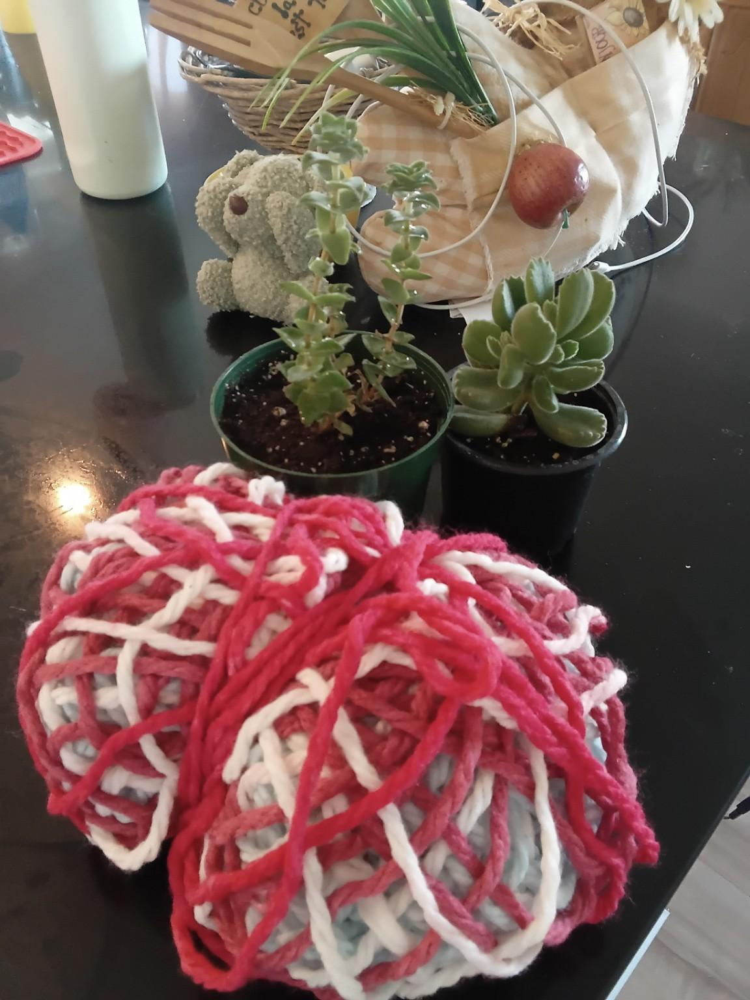

Crochet Plant Pot Cover
Nath’s real chunky crochet plant-pot cover, polished into a clear printable pattern with a measured base, textured sides, tidy edging, and gentle care notes for a cozy handmade plant corner.

Materials
Glossary
Base
For the base, begin with a magic circle and increase only until the flat circle matches the bottom diameter of your pot.
Stop increasing when the base sits flat under the pot. If your pot is smaller, stop earlier; if it is wider, continue the same increase logic one round at a time.
Sides
Repeat until the cover reaches just below the rim of the pot, so watering and plant care stay easy.
Finishing + care
For a soft looped edge, thread yarn through every 2 stitches around the top and tie it gently inside the cover. Keep the yarn below the pot rim so it never sits in wet soil.
Care note: remove the pot before heavy watering, let extra water drain fully, and keep a saucer inside if the pot has drainage holes.
Kindness twist: make one for a plant-loving friend, or use leftover yarn to give an older pot a soft little sweater.

From Nath’s real craft table
This page keeps Nath’s real project photos and original crochet idea, now with clearer sizing, shaping, finishing, and care notes for makers.